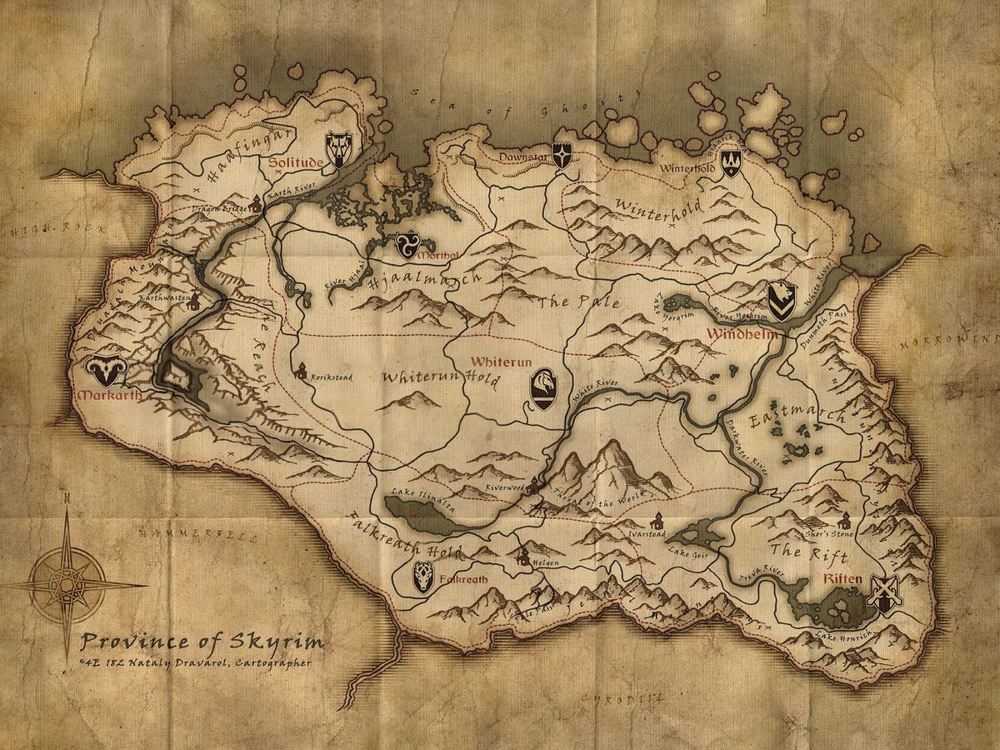
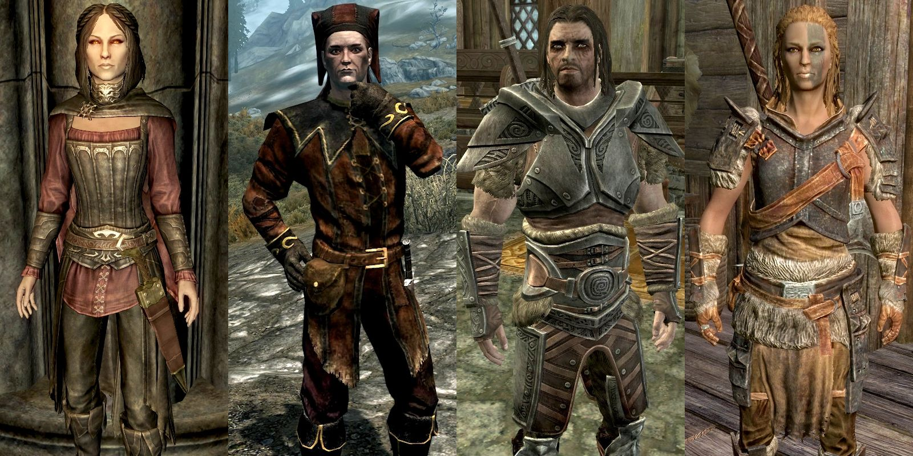

The Elder Scrolls V:Skyrim
World
Skyrim is a captivating province that takes place 200 years after the events of The Elder Scrolls IV: Oblivion, although it is not a direct continuation of the previous game. Situated in the northern region of the continent of Tamriel, Skyrim is known for its cold and mountainous terrain. The province is divided into nine administrative sections, referred to as "holds," each governed by a jarl from a larger town. Among these settlements, five stand out as larger and more influential: Solitude, Windhelm, Markarth, Riften, and Whiterun. As players explore the vast landscape, they will come across a plethora of forts, camps, and ruins, some of which were constructed by the now-extinct Dwemer race, also known as Deep Elves. While the Nords, one of the human races, consider Skyrim their homeland, individuals from various other races also inhabit the province.
Skyrim is a part of the expansive Empire, which encompasses the majority of Tamriel. The Empire recently engaged in a war against the elvish Aldmeri Dominion, a faction that holds the belief in their racial superiority over humans. This conflict, known as the Great War, ultimately resulted in a military stalemate after a grueling battle at the imperial capital. However, the Empire, significantly weakened, was compelled to sign a humiliating peace treaty called the White-Gold Concordat.
While most of Tamriel's inhabitants worship a religious pantheon consisting of eight deities, the Nords of Skyrim have a unique tradition of venerating a ninth god named Talos. Talos is a deified Nord general who played a pivotal role in establishing the Empire. The Aldmeri Dominion, led by the intolerant Thalmor sect, vehemently rejects this belief and the implication that a mortal could surpass any elf. As a result, they included a clause in the White-Gold Concordat that strictly forbids the worship of Talos within the Empire. This condition, among others, has fueled the rebellion led by Ulfric Stormcloak, the jarl of Windhelm. With the holds of Skyrim divided almost evenly between the Stormcloaks and the Empire, tensions run high as the conflict unfolds.
Non Playable Characters (NPCs)
Apart from followers and Alduin, the main antagonist in Skyrim, there are several NPCs that play significant roles in the game's plot. These include Balgruuf, the Jarl of Whiterun, a pivotal town located in the heart of Skyrim; Arngeir, the esteemed leader of the Greybeards; Delphine and Esbern, two of the last remaining members of the Blades, a group of warriors dedicated to aiding the Dragonborn but nearly decimated after the Great War; and Paarthurnax, the sole surviving dragon and the revered grandmaster of the Greybeards. Additionally, Ulfric and General Tullius stand out as notable figures, commanding the Stormcloaks and the Imperial Legion respectively.
Throughout the gameplay, the Dragonborn has the option to align with and support either faction to emerge victorious in the civil war. Furthermore, players can choose to join various other factions in Skyrim, each offering unique quests and storylines. These factions include the Companions, an honorable group of warriors; the College of Winterhold, a prestigious institution focused on the study of mystic arts and magic; the Thieves Guild, a band of skilled burglars facing challenging times; and the Dark Brotherhood, a secretive organization of assassins. The decisions made by the Dragonborn in terms of which factions to support and which quests to undertake will ultimately shape the course of the game and determine the character's journey in the vast and immersive world of
